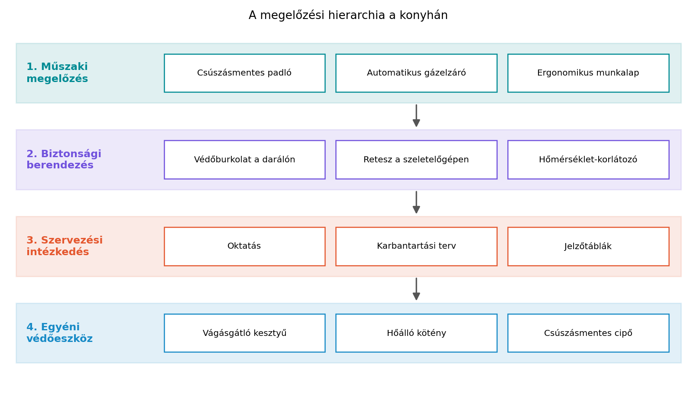

Képzeld el, hogy reggel hatkor belépsz a konyhába. A padló nedves, mert éppen most takarítottak. A sütő már melegszik, a gőzölő fújja a forró párát. Az asztalon éles kés, forró lábas, nehéz tál. Melletted munkatársak sürögnek. Ha nem ismered a veszélyeket, és nem tudod, hogyan védekezz ellenük, egyetlen rossz mozdulat, és megtörténik a baleset: elvágod az ujjad, leforrázod a karod, megcsúszol a padlón. A munkavédelem azért fontos, hogy te és a munkatársaid egészségesen, biztonságban dolgozhassatok, és ne sérülj meg.
A vendéglátó konyha egyszerre tele van hőforrással, éles szerszámokkal, csúszós felületekkel, nehéz anyagokkal és vegyi szerekkel. Ezért a munkavédelem nem valami távoli, irodai ügy. A munkavédelmi szabályok olyanok, mint a kés védőtokja: ha nem használod, magadra és másokra is veszélyt hozol. A munkabaleset nemcsak fájdalmat okoz, hanem munkakiesést, pénzbeli kárt, sőt akár maradandó egészségkárosodást is.
Példa. Egy szakács a nedves padlón csúszva elesik, és forró olajat ránt magára. A baleset elkerülhető lett volna, ha csúszásmentes cipőt visel, és a padlót szárazon tartják. A munkavédelem feladata pontosan az ilyen helyzetek megelőzése.
Definíció. A munkavédelem a munkát végző emberek egészségének, munkavégző képességének megóvása és a munkahelyi biztonság megteremtése. Két nagy területből áll:
A kettő nem választható el élesen. A forró sütő mellett a hőártalom ellen egyszerre kell biztonsági intézkedés (hőszigetelés, kesztyű) és egészségügyi intézkedés (szünet, folyadék).
Definíció. A veszélyes termelési tényező olyan tényező, amely hirtelen, egyszeri, rövid behatással munkabalesetet okozhat. Például: éles kés, forró felület, csúszós padló, áramütés, zsíroldó maró hatása.
Definíció. Az ártalmas termelési tényező olyan tényező, amely hosszabb idő alatt, ismétlődő behatással foglalkozási megbetegedést okozhat. Például: tartós zaj, tartós pára és hő, nehéz terhek emelése, vegyi anyagok gőze, kényszerű testtartás.
Definíció. A munkabaleset a munkavégzés során, hirtelen fellépő külső behatás következtében bekövetkező sérülés, egészségkárosodás vagy halál. Ilyen például az ujj elvágása, a lábfejre eső lábas okozta zúzódás, a forró víz okozta égés.
Definíció. A foglalkozási megbetegedés a munkakörnyezetben lévő ártalmas tényezők hatására, hosszabb idő alatt kialakuló betegség. Ilyen lehet a zaj okozta halláskárosodás, a por okozta légúti panasz, vagy az egyoldalú terhelés okozta mozgásszervi betegség.
A munkahelyi egészség és biztonság a szakács számára nem csupán jogi kötelesség. Ha a konyha biztonságos, kevesebb a baleset, kevesebb a hibás munkavégzés, jobb a hangulat, és a vendégek is nyugodtan fogyaszthatják az ételeket. A munkáltató pedig elkerüli a bírságokat és a kártérítési pereket.
Összefüggés. A munkabaleset és a foglalkozási megbetegedés következményei három szinten jelennek meg:
Ezért éri meg megelőzni.
A munkavédelem története a nagyüzemi gyáriparral indult. A XIX. században a gyárakban rengeteg baleset történt, mert a gépek védőberendezés nélkül üzemeltek, és a munkanap 12–16 óra volt. Fokozatosan születtek meg az első gyári törvények, majd a XX. században a nemzetközi egyezmények (például az ILO, a Nemzetközi Munkaügyi Szervezet egyezményei – ellenőrizendő). Ma a munkavédelmet minden fejlett országban törvény szabályozza, és a munkáltató kötelezettsége a megelőzés.
Jogszabály. A munkavédelemről szóló 1993. évi XCIII. törvény a legfontosabb hazai jogszabály. Előírja a munkáltató számára a biztonságos munkakörülmények kialakítását, a kockázatértékelést, a munkavállalók tájékoztatását és oktatását, valamint a megfelelő egyéni védőeszközök biztosítását. A törvény meghatározza a munkabaleset, a foglalkozási megbetegedés, a veszélyes és ártalmas termelési tényező fogalmát, valamint a megelőzés hierarchiáját. (Ellenőrizendő: a törvény hatályos szövege és a kapcsolódó rendeletek.)
Jogszabály. A kémiai biztonságról szóló 2000. évi XXV. törvény a veszélyes anyagok, tisztítószerek, fertőtlenítőszerek biztonsági adatlapját, tárolását és felhasználását szabályozza. A konyhán a zsíroldó, a klór, a savas tisztítószer mind veszélyes anyag: ezekre kiterjed a törvény hatálya. (Ellenőrizendő: a törvény hatályos szövege és a kapcsolódó rendeletek.)
Jogszabály. Az Országos Tűzvédelmi Szabályzat (OTSZ) a tűzvédelmi követelményeket határozza meg. A konyhában a zsírtűz, a nyílt láng, az elektromos készülékek mind tűzkockázatot jelentenek. (Ellenőrizendő: az OTSZ hatályos rendeletszáma és szövege.)
Jogszabály. A munkavédelmi hatóság ellenőrzi a szabályok betartását. Szabálysértés esetén bírságot szabhat ki, súlyos esetben leállíthatja a munkavégzést. (Ellenőrizendő: a hatóság pontos megnevezése és eljárásrendje.)
A munkavédelem alapelve, hogy a veszélyt mindig a forrásánál kell megszüntetni, nem pedig elfogadni és kivédeni. Ezért a megelőzési intézkedések egy hierarchiát alkotnak. A legerősebb védelem a veszély teljes kiküszöbölése, a leggyengébb az egyéni védőeszköz, amely csak az embert védi, de a veszélyt nem szünteti meg.
Szabály. A megelőzési hierarchia sorrendje a konyhában (ellenőrizendő: Mvt. megelőzési alapelvei):
Fontos. A hierarchiát felülről lefelé kell alkalmazni. Először a műszaki megelőzést próbáljuk elérni, ha az nem lehetséges, akkor a biztonsági berendezést, majd a szervezési intézkedést, és csak végül az egyéni védőeszközt. Az egyéni védőeszköz mindig az utolsó védelmi vonal, soha nem helyettesíti a műszaki megelőzést.
Továbbvitt eredmény. Ezt a megelőzési hierarchiát és a munkavédelmi alapfogalmakat használjuk a Munkahelyek kialakítása, anyagmozgatás és raktározás alfejezetben, amikor konkrét munkahelyeket, anyagmozgatási feladatokat és raktározási körülményeket értékelünk. A hierarchia segít eldönteni, hogy egy adott konyhai veszélyforrásra milyen sorrendben kell intézkedést hozni.
A megelőzési hierarchiát az alábbi rétegábra szemlélteti:

Az ábra tartalma: a munkavédelem megelőzési szintjei felülről lefelé csökkenő erősségűek; a legfontosabb a műszaki megelőzés, az utolsó az egyéni védőeszköz.
Jogszabály. A munkáltató köteles:
A munkavállaló köteles:
Összefüggés. A munkabiztonság közös felelősség. A munkáltató biztosítja a feltételeket, de a munkavállalónak is be kell tartania a szabályokat. Ha a szakács nem használja a vágásgátló kesztyűt, a munkáltató hiába adta ki.
A konyhai munkakörnyezetben több ártalmas tényező is jelen van:
A munkavédelem feladata, hogy ezeket az ártalmakat csökkentse, például megfelelő szellőztetéssel, gépkialakítással, munkaszervezéssel, és ne csak a baleseteket előzze meg.
Figyelem. A munkabaleset hirtelen következik be, és azonnali sérülést okoz. A foglalkozási megbetegedés lassan, évek alatt alakul ki, de ugyanolyan súlyos lehet. Például egy tompa kés okozta vágás a hüvelykujjon egy munkabaleset; a zaj okozta maradandó halláskárosodás viszont foglalkozási megbetegedés. Mindkettő csökkenti a munkavállaló életminőségét, és megterheli a társadalombiztosítási rendszert.
A munkáltató minden munkabalesetet kivizsgál és nyilvántart; a munkaképtelenséget okozó balesetekről jegyzőkönyvet készít és azt a hatóságnak megküldi, a súlyos munkabalesetet pedig azonnal bejelenti (ellenőrizendő: Mvt. és végrehajtási rendelete; részletesen: Munkavédelmi jogok és kötelezettségek, munkabaleset). A munkavállaló ezért köteles azonnal jelezni, ha baleset éri, akkor is, ha a sérülés kicsinek tűnik.
A munkavédelmi ismeretek minősége akkor jó, ha a tanuló:
Példa. Egy konyhai sütőtérben a padló csúszós, a sütőajtó forró, a szakács mezítláb szandálban dolgozik. A minőségi munkavédelmi elemzés így szól: a csúszásmentes padló műszaki megelőzés, a forró felület hőszigetelése műszaki megelőzés, a csúszásmentes cipő egyéni védőeszköz, a padló azonnali feltörlése szervezési intézkedés.
Hiba. A munkavállaló eltávolítja a védőburkolatot a
húsdarálóról, hogy gyorsabban tudja tisztítani, és nem áramtalanítja a
gépet.
Ok: a sietség, a rutin, a kényelem.
Következmény: a gép beindulása súlyos kézsérülést
okozhat.
Helyes gyakorlat: üzem közben a védőburkolatot tilos
eltávolítani vagy kiiktatni. Tisztításhoz a gépet csak leállítva,
áramtalanítva (dugasz kihúzva), a kezelési utasítás szerint szabad
szétszerelni, és újraindítás előtt minden védőelemet vissza kell
szerelni.
Hiba. A szakács nem viseli a csúszásmentes cipőt,
mert „kicsit meleg, és nem történt még baj”.
Ok: a kényelem, a veszély alulbecsülése.
Következmény: egy nedves folton megcsúszik, és forró
levest ránt magára.
Helyes gyakorlat: mindig a munkáltató által
biztosított, zárt, csúszásmentes lábbelit viselni.
Hiba. A munkáltató nem végez kockázatértékelést, és
nem tart munkavédelmi oktatást az új dolgozónak.
Ok: költségkímélés, szervezetlenség.
Következmény: a dolgozó nincs tisztában a veszélyekkel,
és a hatóság bírságot szab ki.
Helyes gyakorlat: a kockázatértékelést el kell végezni,
és minden új belépőt kötelező oktatni.
Egy közepes forgalmú étterem konyháján egy fiatal szakács az első munkanapján kapott egy feladatot: tisztítsa meg a húsdarálót. Az oktatás rövid volt, és a munkatárs nem mutatta meg pontosan a balesetvédelmi szabályokat. A szakács a gép védőrácsát levette, hogy a maradék húst eltávolítsa. A gépet véletlenül beindította, mert nem húzta ki a hálózatból. A jobb kezének mutatóujja súlyosan sérült, mentőt kellett hívni. A munkáltatót a munkavédelmi hatóság megbírságolta, mert a gépet áram alatt szerelték szét, nem volt írásos munkautasítás, és az oktatás sem volt dokumentálva. Az eset tanulsága: a védőberendezést üzem közben eltávolítani tilos, a gépet tisztítás előtt mindig áramtalanítani kell, a szétszerelés csak a kezelési utasítás szerint történhet, és az oktatásnak teljesnek, dokumentáltnak kell lennie.
1. feladat (A). Határozd meg a munkavédelem fogalmát, és nevezd meg a két nagy területét. Adj mindkettőhöz egy-egy konyhai példát.
2. feladat (A). Sorold fel a konyhában előforduló veszélyes termelési tényezők közül legalább négyet, és az ártalmas termelési tényezők közül legalább hármat. Mindegyikhez írj rövid indoklást, miért veszélyes vagy ártalmas.
3. feladat (B). Egy étterem konyháján a padló csempéje sima és nedves, a fritőz olajszintje túl magas, a szakács pedig lapos talpú, nyitott cipőben dolgozik. Állítsd fel a kockázatcsökkentő intézkedések sorrendjét a megelőzési hierarchia szerint, és indokold, miért abban a sorrendben.
4. feladat (B). A szeletelőgép pengéje éles, védőburkolata hiányzik. Milyen munkabaleset következhet be? Milyen intézkedéseket javasolsz a hierarchia egyes szintjein?
5. feladat (C). Készíts egyszerű kockázatértékelési táblázatot egy sütőpult munkaállomásra a következő oszlopokkal: veszélyforrás, lehetséges következmény, megelőzési szint, javasolt intézkedés. Legalább öt sor legyen.
6. feladat (D). Elemezd az alábbi esetet a
megelőzési hierarchia szempontjából:
Egy szakács a forró olajos fritőz mellett, kesztyű nélkül dolgozik. A
fritőzön nincs hőmérséklet-korlátozó, és a fölötte lévő elszívó nem
működik. A szakács a nedves padlón megcsúszik, a forró olaj kiloccsan,
másodfokú égést szenved. Mi minden hiányzott? Hogyan lehetett volna
megelőzni a balesetet a hierarchia minden szintjén?
Önellenőrzés – válaszok
1. feladat (A).
A munkavédelem a munkát végző emberek egészségének, munkavégző
képességének megóvása és a munkahelyi biztonság megteremtése. Két
területe: munkabiztonság (például a csúszásmentes padló, védőburkolat a
gépen), munkaegészségügy (például a szellőzés biztosítása a pára ellen,
hallásvédelem a zaj ellen).
2. feladat (A).
Veszélyes: éles kés (vágás), forró sütőfelület (égés), csúszós padló
(elesés), áramütés (hibás készülék), forró zsiradék (égés), leeső nehéz
lábas (zúzódás).
Ártalmas: tartós zaj (halláskárosodás), forró gőz, pára (légúti panasz),
nehéz terhek emelése (gerincpanasz), vegyi anyagok gőze (bőr- és légúti
irritáció), kényszerű állómunka (ízületi, keringési panasz).
3. feladat (B).
Sorrend: 1) Műszaki megelőzés: csúszásmentes padlóburkolat kialakítása,
fritőz túlcsordulásgátlóval; 2) Biztonsági berendezés:
hőmérséklet-korlátozó az olaj túlmelegedése ellen, cseppenfogó; 3)
Szervezési intézkedés: a padló azonnali feltörlése, olajszint
ellenőrzése; 4) Egyéni védőeszköz: csúszásmentes, zárt cipő (utolsó
védelmi vonal). Indoklás: a veszélyt a forrásnál kell megszüntetni; az
egyéni védőeszköz csak az embert védi, ezért utolsó.
4. feladat (B).
Lehetséges baleset: a kéz becsúszik a pengéhez, amputáció vagy súlyos
vágás. Hierarchia: Műszaki megelőzés – zárt pengeburkolat, csak a vágási
résen szabad késél; Biztonsági berendezés – védőburkolat,
reteszkapcsoló; Szervezési – munkautasítás, oktatás, áramtalanítás a
tisztításhoz; Egyéni védőeszköz – vágásgátló kesztyű (de önmagában nem
elég).
5. feladat (C).
Példa táblázat:
| Veszélyforrás | Lehetséges következmény | Megelőzési szint | Javasolt intézkedés |
|---|---|---|---|
| Forró sütőajtó | égés | Műszaki | hőszigetelt ajtó |
| Csúszós padló | esés | Műszaki / szervezési | csúszásmentes burkolat, feltörlés |
| Forró gőz | forrázás | Biztonsági berendezés | elszívó, gőzzár |
| Éles sütőlemez széle | vágás | Biztonsági berendezés | lekerekített él, védőél |
| Nehéz tál | izom- és gerincsérülés | Szervezési | segédeszköz, két fős emelés |
| Zajos elszívó | halláskárosodás | Műszaki | karbantartás, csendesebb ventilátor; hallásvédő csak kiegészítésként (egyéni védőeszköz) |
6. feladat (D).
Hiányzott: hőmérséklet-korlátozó (biztonsági berendezés); működő elszívó
(biztonsági berendezés); csúszásmentes padló (műszaki megelőzés); hőálló
kesztyű, csúszásmentes cipő (egyéni védőeszköz); a padló azonnali
feltörlése munkautasítás szerint (szervezési intézkedés). Megelőzés: a
fritőzön hőmérséklet-korlátozó, a padló csúszásmentesítése, az elszívó
karbantartása, a szakács védőfelszerelése, munkautasítás a nedvesség
azonnali feltörlésére.
A munkavédelem a munkát végző emberek egészségének, munkavégző képességének megóvása és a munkahelyi biztonság megteremtése. Két ága: a munkabiztonság a munkabalesetek, a munkaegészségügy a foglalkozási megbetegedések megelőzésére irányul. A veszélyes termelési tényező hirtelen balesetet (pl. éles kés, forró felület), az ártalmas termelési tényező hosszú távon betegséget okoz (pl. zaj, pára, nehéz teher). A megelőzési hierarchia sorrendje: műszaki megelőzés, biztonsági berendezés, szervezési intézkedés, egyéni védőeszköz; a veszélyt a forrásánál kell megszüntetni, az egyéni védőeszköz csak az utolsó vonal. A munkáltató köteles kockázatértékelést végezni, védőeszközt biztosítani, oktatni; a munkavállaló köteles a szabályokat betartani és a védőeszközt használni. Továbbvitt eredmény. A megelőzési hierarchiát és a munkavédelmi alapfogalmakat a Munkahelyek kialakítása, anyagmozgatás és raktározás alfejezetben alkalmazzuk a konkrét konyhai munkahelyek, anyagmozgatási feladatok és raktározási körülmények értékelésekor.